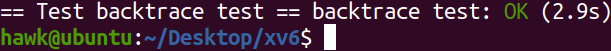
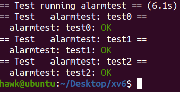

xv6-四
前言
这篇博客探索一下xv6从U-mode地址空间trap(陷入)到S-mode地址空间的机制(前面xv6-二已经介绍的非常详细了)
Lab traps
本次lab帮助熟悉xv6的trap(陷入)机制
Backtrace
要求
Implement a backtrace() function in kernel/printf.c. Insert a call to this function in sys_sleep, and then run bttest, which calls sys_sleep. Your output should be as follows:
2
3
4
0x0000000080002cda
0x0000000080002bb6
0x0000000080002898After bttest exit qemu. In your terminal: the addresses may be slightly different but if you run addr2line -e kernel/kernel (or riscv64-unknown-elf-addr2line -e kernel/kernel) and cut-and-paste the above addresses as follows:
2
3
4
5
0x0000000080002de2
0x0000000080002f4a
0x0000000080002bfc
Ctrl-DYou should see something like this:
2
3
kernel/syscall.c:224
kernel/trap.c:85
分析
根据riscv的调用约定，riscv的stack frame(栈帧)有固定格式
可以看到，每一个frame的前16个字节，保存着返回地址和上一个frame的栈顶地址
通过当前frame的地址(s0寄存器值)，即可以此遍历当前所有的frame
实现
首先，在kernel/vm.c中添加kwalkaddr函数，从而判断对应的s0指向的地址是否为有效地址，用以终止frame的遍历1
2
3
4
5
6
7
8
9
10
11
12
13
14
15
16
17
18
19
20
21// kernel/vm.c
// Look up a virtual address, return the physical address,
// or 0 if not mapped.
// It is lookup in kernel pagetable
uint64
kwalkaddr(uint64 va)
{
pte_t *pte;
uint64 pa;
if(va >= MAXVA)
return 0;
pte = walk(kernel_pagetable, va, 0);
if(pte == 0)
return 0;
if((*pte & PTE_V) == 0)
return 0;
pa = PTE2PA(*pte);
return pa;
}
其次，在kernel/printf.c中，通过内敛汇编获取当前frame的s0寄存器值，从而按照前面所分析的，完成所有frame的遍历1
2
3
4
5
6
7
8
9
10
11
12
13
14
15
16
17
18
19
20
21
22
23
24// kernel/printf.c
// print the call stack to console
// according to the call convention
// -8(s0) is the return address
// -16(s0) is the prev frame's s0
void
backtrace(void)
{
uint64 s0;
// get the current frame s0
asm volatile(
"mv %0, s0"
: "=r"(s0));
printf("backtrace:\n");
//walk through the frame
while(kwalkaddr(s0)) {
printf("%p\n", *(uint64*)(s0 - 8));
s0 = *(uint64*)(s0 - 16);
}
}
结果
执行如下命令，完成实验测试1
make GRADEFLAGS="backtrace" grade

Alarm
要求
In this exercise you’ll add a feature to xv6 that periodically alerts a process as it uses CPU time. This might be useful for compute-bound processes that want to limit how much CPU time they chew up, or for processes that want to compute but also want to take some periodic action. More generally, you’ll be implementing a primitive form of user-level interrupt/fault handlers; you could use something similar to handle page faults in the application, for example. Your solution is correct if it passes alarmtest and usertests.
分析
刚看到这个lab时，就立马联想到前面linux内核学习-八中Linux内核处理信号的过程
要实现alarm功能，主要有以下几个难点
- 如何记录并触发alarm
- 如何执行U-mode中进程定义的handler
- 如何从handler中返回触发alarm前的上下文
记录和触发alarm
只需要在struct proc中添加相关的数据结构，即可记录alarm的时间间隔、当前状态和handler信息
而触发alarm也很简单，只需要在每次timer interrupt(时钟中断)时刷新alarm数据结构信息，并判断即可
执行handler
根据之前博客分析的trap流程，其会在usertrapret(kernel/trap.c)中，设置sepc(Supervisor Exception Program Counter)，从而指定trap返回后，U-mode对应的第一条指令地址
在前面触发alarm时，将struct proc的trapframe字段的epc值设置为对应的handler，其会在usertrapret(kernel/trap.c)中赋值给sepc，从而完成trap返回后执行handler
需要注意的是，为了确保之后可以恢复到触发alarm前的U-mode的上下文，自然需要保存该sepc原始值以及其他信息，在下面部分进行介绍
返回触发alarm上下文
根据前面的分析，为了在触发alarm并执行完handler后，仍然能恢复触发前的执行状态，内核需要保存相关的数据——即struct proc的trapframe数据
在执行完handler后，sigreturn系统调用保存的trapframe和触发alarm时的trapframe很可能完全不一致。因此需要在前面执行handler前，备份struct proc的trapframe数据。
而由于xv6的精巧设计，trapframe中包含触发alarm前的程序上下文，和触发alarm对应的epc。从而在sigreturn系统调用中恢复之前保存的trapframe，即可在从trap退出后，恢复到触发alarm前的状态
实现
首先，在kernel/proc.h中更改struct proc的结构体，添加记录alarm信息和保存trapframe数据的字段1
2
3
4
5
6
7
8
9
10
11
12
13
14
15
16
17
18
19
20
21
22
23
24
25
26
27
28
29
30
31
32
33
34
35// kernel/proc.h
// Per-process state
struct proc {
struct spinlock lock;
// p->lock must be held when using these:
enum procstate state; // Process state
struct proc *parent; // Parent process
void *chan; // If non-zero, sleeping on chan
int killed; // If non-zero, have been killed
int xstate; // Exit status to be returned to parent's wait
int pid; // Process ID
// these are private to the process, so p->lock need not be held.
uint64 kstack; // Virtual address of kernel stack
uint64 sz; // Size of process memory (bytes)
pagetable_t pagetable; // User page table
struct trapframe *trapframe; // data page for trampoline.S
struct trapframe tf_bak; // store the frame when invoke the alarm handler
// restore the frame when invoke sigreturn
struct context context; // swtch() here to run process
struct file *ofile[NOFILE]; // Open files
struct inode *cwd; // Current directory
char name[16]; // Process name (debugging)
alarm alarm; // Process's alarm
};
// kernel/syssig.h
typedef struct {
uint64 fn; // user-defined callback function
int time; // tick remained for alarms
int interval; // alarm interval tick.
int status; // the alarm struct's status
} alarm;
接着，实现sysalarm系统调用，从而添加alarm1
2
3
4
5
6
7
8
9
10
11
12
13
14
15
16
17
18
19
20
21
22
23
24
25
26
27
28
29// kernel/syssig.c
// add an alarm
uint64
sys_sigalarm(void)
{
struct proc *p = myproc();
if(p == 0 || p->alarm.status != ALARM_UNUSE)
return -1;
int interval;
uint64 fn;
if(argint(0, &interval) < 0 || argaddr(1, &fn) < 0)
return -1;
// handle corner case
if(interval < 0)
return -1;
if(interval == 0 && fn == 0)
return 0;
p->alarm.status = ALARM_WAIT;
p->alarm.fn = fn;
p->alarm.interval = interval;
p->alarm.time = interval;
return 0;
}
下面完成alarm的更新和触发，即在timer interrupt时更新并判断alarm。当alarm需要被触发时，则保存当前的trapframe，并更改epc字段即可1
2
3
4
5
6
7
8
9
10
11
12
13
14
15
16
17
18
19
20
21
22
23
24
25
26
27
28
29
30
31
32
33
34
35
36
37
38
39
40
41
42
43
44
45
46
47
48
49
50
51
52
53
54
55
56
57
58
59
60// kernel/syssig.c
void
handle_alarm(void)
{
struct proc *p = myproc();
if(p == 0)
return;
if(p->alarm.status != ALARM_WAIT)
return;
if(p->alarm.time > 0)
--p->alarm.time;
if(p->alarm.time == 0) {
// it is time to invoke the alarm handler
p->alarm.status = ALARM_HANDLE;
// store the U-mode trapframe
memmove(&p->tf_bak, p->trapframe, sizeof(struct trapframe));
// it should execute the fn callback, when from the trap
p->trapframe->epc = p->alarm.fn;
}
}
// kernel/trap.c
// check if it's an external interrupt or software interrupt,
// and handle it.
// returns 2 if timer interrupt,
// 1 if other device,
// 0 if not recognized.
int
devintr()
{
...
} else if(scause == 0x8000000000000001L){
// software interrupt from a machine-mode timer interrupt,
// forwarded by timervec in kernelvec.S.
if(cpuid() == 0){
clockintr();
}
// acknowledge the software interrupt by clearing
// the SSIP bit in sip.
w_sip(r_sip() & ~2);
// handle the alarm
handle_alarm();
return 2;
} else {
return 0;
}
}
最后，则是实现sigreturn系统调用，恢复保存的trapframe，从handler中返回到触发alarm前的状态1
2
3
4
5
6
7
8
9
10
11
12
13
14
15
16
17
18
19
20
21// kernel/syssig.c
// it was in the signal handler
// yet its origin context is saved
// so just restore to origin context
uint64
sys_sigreturn(void)
{
struct proc *p = myproc();
if(p == 0 || p->alarm.status != ALARM_HANDLE)
return -1;
p->alarm.status = ALARM_WAIT;
p->alarm.time = p->alarm.interval;
// store the U-mode trapframe
memmove(p->trapframe, &p->tf_bak, sizeof(struct trapframe));
return 0;
}
结果
执行如下命令，完成实验测试1
make GRADEFLAGS="alarmtest" grade
